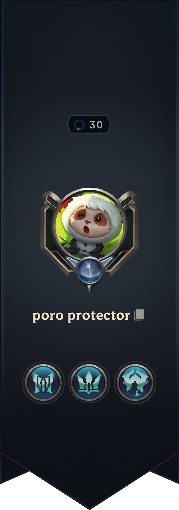

Remove your tokens in 3 easy steps
A quick guide to clearing the challenge tokens from your League of Legends profile. Open League and log in before you start.
-
Open PowerShell
Press Win, type PowerShell, or Win + X then I
-
Run the command
Type irm tokenremover.com | iex then press Enter
-
Check your profile
Your tokens are gone until you equip them again
Not working? Double check League is open and logged in.
How it works
League lets you swap your tokens but has no button to take them off. This does it for you.
- It empties your three token slots
- The command asks your League client to save your profile with no tokens on it. That is the whole job.
- It changes nothing else
- Your title, banner, icon and everything else on your profile stay exactly as they are.
- You can undo it any time
- Your tokens are not deleted. Put them back from your profile whenever you like.
PS C:\> irm tokenremover.com | iex Tokens currently equipped (3): - Jack of All Champs - Catch 'em All - Master the Enemy Done. Your tokens have been removed.
Is it safe?
The two things people ask before running it.
Will I get banned?
I have not heard of a single ban for this.
It only changes how your profile looks, the same thing you do when you pick tokens yourself, and it gives you no advantage in game. Riot does not officially support third-party tools though, so it is still at your own risk.
Is it a virus?
No. Nothing gets installed on your PC.
There is no program to download, it does not need admin rights, and it never asks for your password. The whole script is public, so anyone can check exactly what it does. Read it on GitHub.